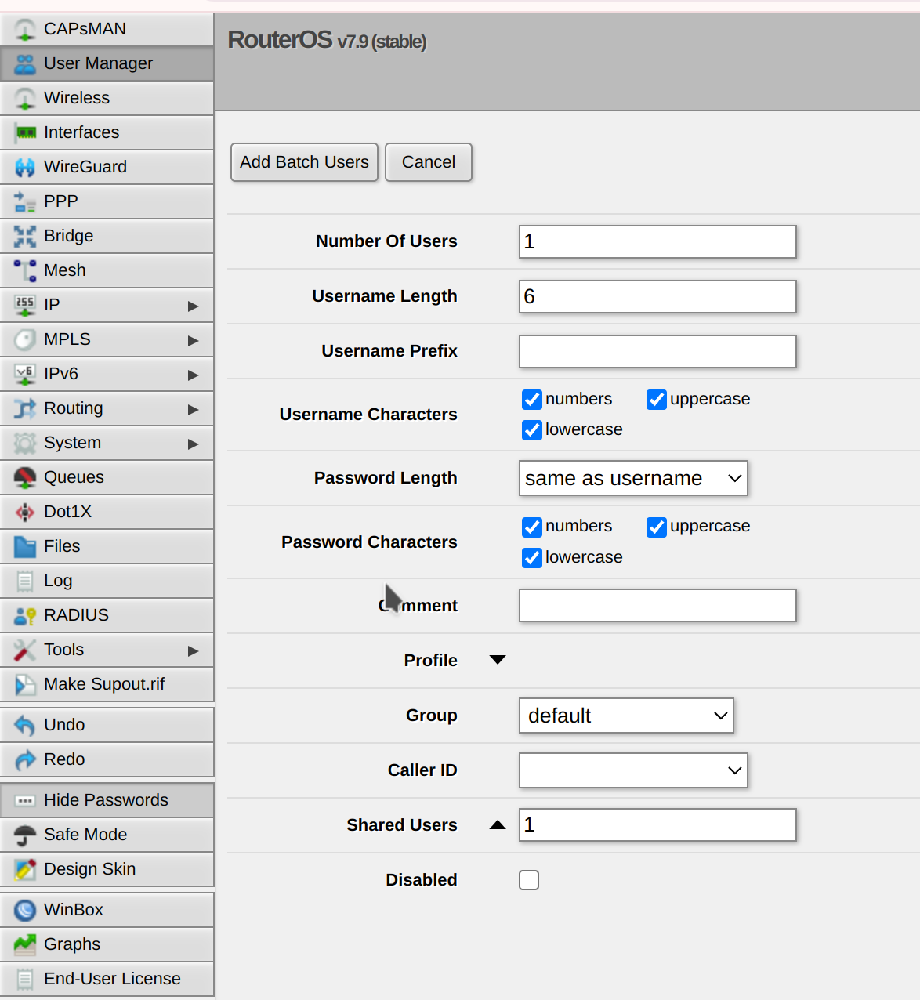

Hotspot amb user-manager
RADIUS
Un servidor RADIUS (Remote Authentication Dial-In User Service) és un protocol de xarxa utilitzat per autenticar, autoritzar i contabilitzar els usuaris en una xarxa. Es fa servir per controlar l'accés de dispositius i usuaris a una xarxa (com una xarxa Wi-Fi, VPN, Hotspot, etc.), i permet centralitzar la gestió de les credencials dels usuaris.
Què fa un servidor RADIUS?
- Autenticació: El servidor RADIUS verifica les credencials d'un usuari quan intenta accedir a la xarxa.
- Autorització: Un cop l'usuari està autenticat, el servidor RADIUS autoritza el tipus d'accés que l'usuari té permès (per exemple, accés a determinats serveis o restriccions de velocitat).
- Contabilització: El servidor RADIUS pot registrar dades sobre l'ús de la xarxa, com el temps que l'usuari ha estat connectat o la quantitat de dades que ha transferit.
Com utilitzar User Manager de MikroTik per crear un grup d'usuaris i generar un voucher amb una durada de 2 hores
1. Configuració inicial de User Manager
Abans de poder crear usuaris i generar vouchers, assegura't que tens el paquet User Manager instal·lat i activat al teu dispositiu MikroTik. Aquests són els passos bàsics per configurar el User Manager:
- Accedeix a MikroTik:
-
Connecta't al teu dispositiu MikroTik mitjançant Winbox o WebFig.
-
Instal·la el paquet User Manager (si no ho tens instal·lat):
- Descarrega el paquet de User Manager des del lloc oficial de MikroTik.
- Carrega el paquet a través de Winbox o FTP a la carpeta Files del dispositiu.
-
Reinicia el dispositiu per activar el paquet.
-
Accedeix a User Manager:
- Un cop el paquet estigui instal·lat i el dispositiu reiniciat, accedeix a User Manager des de Winbox o WebFig.
- A WebFig, vés a IP > User Manager per començar a configurar-lo.
2. Crear un perfil d'usuari i un grup
Els perfils d'usuari en User Manager defineixen les condicions d'ús com el temps límit, el trànsit permès i altres restriccions.
- Crear un perfil d'usuari:
- A User Manager, vés a Profiles.
- Clica a Add New per crear un nou perfil.
- Assigna un nom al perfil (per exemple, "2-Hours Voucher").
- A la configuració del perfil, assigna el límit de temps:
- A Limit Uptime, posa "2h" per assignar 2 hores com a durada màxima de connexió.
-
Desa els canvis.
-
Crear un grup d'usuaris (perfil del grup):
- Torna a la pantalla principal de User Manager.
- Vés a Users i selecciona Add New.
- Assigna un nom d'usuari i contrasenya per a aquest usuari.
- A la configuració de l'usuari, assigna el profile creat anteriorment, en aquest cas el perfil "2-Hours Voucher".
- Si vols que els usuaris d'aquest grup puguin utilitzar aquest voucher, assegura't de configurar els altres paràmetres com el Time Limit.
3. Generar un Voucher
Els vouchers es poden generar per crear un codi que permetrà a l'usuari connectar-se al Hotspot de MikroTik amb les restriccions establertes en el perfil d'usuari.
- Generar el voucher per un usuari:
- Un cop creat l'usuari i assignat el perfil, pots generar un voucher que contingui les credencials (nom d'usuari i contrasenya) i el temps de connexió (2 hores en aquest cas).
- A User Manager, selecciona l'usuari al qual vols assignar el voucher.
- Clica sobre l'usuari i, dins de les opcions disponibles, cerca una opció per generar un voucher.
-
Aquesta acció generarà un codi o un fitxer que pots imprimir i distribuir als usuaris.
-
Distribuir el voucher al client:
- Un cop generat, pots imprimir el codi voucher amb la informació que l'usuari necessita per accedir al Hotspot (usuari i contrasenya).
- Aquest voucher li permetrà al client connectar-se al Hotspot i tenir accés a la xarxa durant el temps permès pel perfil (en aquest cas, 2 hores).
4. Configurar Hotspot per utilitzar RADIUS amb User Manager
Si vols utilitzar RADIUS per autenticar usuaris creados al User Manager al Hotspot, segueix aquests passos:
- Configura RADIUS a MikroTik:
- Vés a Radius > Servers a Winbox o WebFig.
-
Afegeix un nou servidor RADIUS amb la configuració següent:
- Address: La IP del dispositiu MikroTik (on es troba el User Manager).
- Secret: El secret compartit que utilitzarà el Hotspot per comunicar-se amb el User Manager.
- Service: Marca l'opció Hotspot.
-
Configuració del Hotspot per usar RADIUS:
- A IP > Hotspot, edita la configuració del servidor Hotspot per utilitzar RADIUS.
- A la pestanya Servers, selecciona el servidor RADIUS que acabes de configurar.
Aquesta configuració permetrà que els usuaris que utilitzin els vouchers creats al User Manager es connectin correctament al Hotspot amb les credencials i límits establerts (en aquest cas, un límit de 2 hores).
Gererar lots d'usuaris amb la interfície gràfica
Podem generar lots d'usuaris directament amb user-manager definint prefix d'usuaris, grup, etc...

Alternativa a generar els voucheurs
!!! "Danger"
De vegades certes versions de Mikrotik o de navegador fan que no es genere visualment els voucheurs. Tenim l'alternativa de fer-ho per comandaments.
Resum del procés:
- Instal·la i configura User Manager a MikroTik.
- Crea un perfil d'usuari amb límits (com ara el límit de temps de 2 hores).
- Assigna aquest perfil a un usuari i crea el voucher.
- Configura el Hotspot per utilitzar RADIUS amb User Manager per autenticar els usuaris.
- Distribueix el voucher als usuaris per permetre'ls accedir a la xarxa durant el temps permès (2 hores).